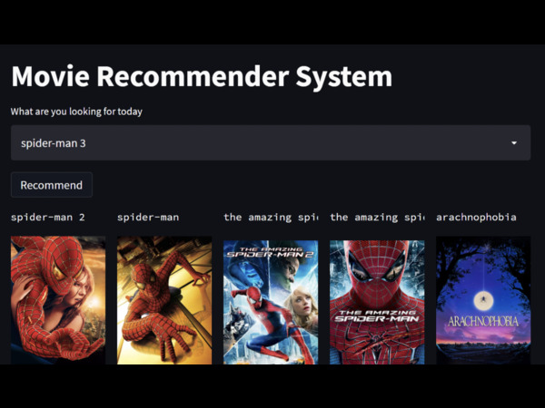

Netflix Movie Recommender
A deep learning based movie recommender system

Developed a Recommendation System by applying Matrix Factorization and the model was trained and tested for both an existing user
and a new user using Grouplens's MovieLens 25M dataset
Developed a Recommendation System by applying Matrix Factorization and the model was trained and tested for both an existing user and a new user using Grouplens's MovieLens 25M dataset